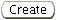

Previous Topic
Next Topic
| Compliance Reports |
Previous Topic |
Next Topic |
This topic covers the second-level menu, Compliance Report Detail, under the Compliance Reports tab. Compliance reports are either completed by the owner or operator of a facility manually (hard copy) or electronically. Hard copy submittals are entered electronically by DO/LAA staff. The same compliance report forms are completed regardless of whether they are entered by DO/LAA staff from hard copy reports or submitted electronically through the gateway by a regulated community user. One exception is that the TV Annual Compliance Certification is required to be submitted electronically by the external user.
Depending on whether you are viewing a report that has been submitted or you are viewing a report that has yet to be submitted “electronically” (i.e., a report in the process of being electronically entered by DO/LAA staff), the report may be editable through the Compliance Report Detail page. The only reports that an internal user can view are those that are submitted from an external user, or those that were submitted in hard copy form and are entered electronically by DO/LAA staff.Once the entire report has been validated and submitted, only portions of the report will be editable as part of the review process performed by DO/LAA staff.
This Help page will focus on the fields you view on the Compliance Report Detail page, fields that are editable IF you are entering a hard copy report, or fields you will edit during the review process. Certain steps may need to be completed in other sections of the system in order to access a report through the Compliance Report Detail page for continued editing. These steps are discussed briefly under the heading “How Are Compliance Reports Electronically Entered by the DO/LAA?” below. The end of this Help page provides links to several “Related Help Topics” that will allow direct access to additional Help you may need during this process.
This topic contains the following sections:
Recall, DO/LAA staff will enter hard copy reports submitted by the owner or operator of a facility. In order to begin report entry the following steps are necessary:
You can locate a report and access a Compliance Report Detail page throughout many of the system pages, most usually through the Compliance Report Search or a Facility Detail pages.
Using either method, the datagrid will contain a column with the Report ID which is hyperlinked to the specific Compliance Report Detail page. Click on the Report ID.
Reports being entered or
reviewed by DO/LAA staff can be edited by clicking  at the bottom of the
page. Enter information as needed and
at the bottom of the
page. Enter information as needed and  or
or  . When entering a report, or
when reviewing a report, you can stop at any point and save your work
by clicking
. When entering a report, or
when reviewing a report, you can stop at any point and save your work
by clicking  at the bottom of the page or cancel your work by clicking
at the bottom of the page or cancel your work by clicking  .
Clicking
.
Clicking  will erase any information you just entered electronically.
This button is used to “reset” the data fields that have been changed
since the last save. Notes and attachments entered into the system are
not affected by clicking
will erase any information you just entered electronically.
This button is used to “reset” the data fields that have been changed
since the last save. Notes and attachments entered into the system are
not affected by clicking  .
These documents are permanent unless deleted
before submission to the system.
.
These documents are permanent unless deleted
before submission to the system.
Permit
Evaluation Reports and Other Compliance
Reports
may be deleted by clicking the  button at the bottom of the page while
in edit mode. This option is ONLY available while the report is in
Draft
form (has not yet been submitted). Deleting will remove the
report and all attachments from the system.
button at the bottom of the page while
in edit mode. This option is ONLY available while the report is in
Draft
form (has not yet been submitted). Deleting will remove the
report and all attachments from the system.
Recall, only Permit
Evaluation
Reports and Other Compliance
Reports may be entered electronically, and
submitted, by DO/LAA staff when a hard copy form is received from the
facility. When you are ready to submit the completed report, it will
need to pass a validation process to ensure the minimum information is
included. These validation checks apply equally to internal and
external submittals. Therefore, if you are entering a hard copy report
it is important that all information contained in the report is entered
before submission. To Validate
click  at the bottom of the page. A
pop-up box will appear displaying any issues associated with the
validation. The issue(s) must be resolved in order for report submittal
to occur.
at the bottom of the page. A
pop-up box will appear displaying any issues associated with the
validation. The issue(s) must be resolved in order for report submittal
to occur.
Issues with validation are categorized as either ERRORs, WARNINGs or INFOs. ERRORs must be resolved before the document can be validated. If you only experience WARNINGs or INFOs, the validation process will be successful without the need to click validate again; however, WARNINGs and INFOs may be viewed and corrected/changed before submission. If changes are made after validation, it will be necessary to validate again.
To navigate to any ERRORs, WARNINGs or INFOs, click on the brown underlined hyperlink associated with the issue. This will take you to the page where it was detected. The page should open in the edit mode. If it is an error, you will need to correct the error and navigate back to the Application Detail page to validate again or open the validation pop-up using the toolbar at the bottom of your computer screen and move on to the next error message hyperlink until all errors have been corrected. WARNINGs and INFOs may be viewed by following the above procedure. When viewing, you can determine if the information requires a change or if you want to keep the information as originally determined. WARNINGs typically may be more significant issues than ERRORs.
Once the document passes validation, you will see the
Information-
validation successful message at the top of the screen. Once all issues
are resolved, click  to complete the process.
to complete the process.
The information you see on the Compliance Report Detail page may depend on the type of report you are viewing, or editing. The information below is relevant to each type available.
This section explains the fields you will see in a TV Annual Compliance Certification and fields that are completed as part of the process of reviewing a report. Please note, Title V facilities will be required to submit their TV Annual Compliance Certification electronically in the system; therefore, you will not be able to create a TV Annual Compliance Certification. Title V facilities have two options available for fulfilling the electronic submittal requirement. They may choose to complete the Identification of Intermittent Compliance (IC) (including any necessary attachments) and Any Material Information Not Established Through the Applicable Permit Terms and Conditions That May Indicate Non-Compliance sections or they may choose to use their own form that fulfills the requirements for a TV Annual Compliance Certification and attach the document in the Attachments section of the system’s form.
Received On: This field identifies the date the application was electronically submitted by an external user.
This section contains a datagrid of information regarding any deviations or excursions being reported if the owner or operator of the facility is choosing this reporting option over the attachment option.
The owner or operator of the facility will have reported any necessary information per the instructions in this section. Additional information about the contents of this fields can be found in the “Title V Compliance Certification Form and Instructions” found in the External References section of the system.
The Attachments section is used to incorporate any Attachments submitted as part of the report, including if the owner or operator of the facility is choosing to submit their own form as an attachment rather than completing the other fields of this report. The Attachment Type field is a hyperlink that allows you to access and view the attachment.
This section explains the fields you will see in a Permit Evaluation Report, fields to complete when you are entering a hard copy report received, and fields that are completed as part of the process of reviewing a report.
This section contains additional information the reporter may need to communicate. If you are entering a hard copy report it will correspond to the same section in the hard copy form. Additional information about the contents of this field can be found in the “PER FAQs” document found in the External References section of the system.
This section contains a datagrid of information regarding whether or not deviations or excursions occurred for each emissions unit issued a PTIO. If you are entering a hard copy report it will correspond to the same section in the hard copy form.
If Yes is identified, either an attachment should be included in the Attachments section OR the Deviation, Exceedance, or Visible Emissions Detail datagrid must be completed identifying the additional information required for each deviation or exceedance. Additional information about the contents of this field can be found in the “PER FAQs” document found in the External References section of the system.
Additional information is required for each deviation or exceedance that prompted a Yes answer in the Detailed EU Information datagrid and for any visible emissions (VE) incident that occurred during the reporting period. In lieu of completing this datagrid, information that fulfills the requirements can be included as an attachment in the Attachments section. Additional information about the contents of this field can be found in the “PER FAQs” document found in the External References section of the system.
The datagrid contains the following fields, which when entering a hard copy form require entry of the fields identified in the pop-up below generated by clicking on .
When entering a hard copy report, click  to populate the information
into the datagrid or click  to return to specific Compliance
Report
Detail page. Clicking
to return to specific Compliance
Report
Detail page. Clicking  will cancel any report information you just
entered electronically.
will cancel any report information you just
entered electronically.
The Attachments section is used to incorporate any Attachments needed to complete the report. This includes the requirement to attach additional information for each deviation or exceedance that prompted a Yes answer in the Detailed EU Information datagrid and for any visible emissions (VE) incident that occurred during the reporting period when the Deviation, Exceedance, or Visible Emissions Details Section was not used to report such information.
Click  which will generate the following pop-up window:
which will generate the following pop-up window:

Click
to populate the information into
the datagrid or click  to return to specific Compliance
Report Detail
page. Clicking
to return to specific Compliance
Report Detail
page. Clicking  will cancel any report information you just entered
electronically.
will cancel any report information you just entered
electronically.
The datagrid will be automatically populated with an Attachment ID (unique ID number automatically generated by the system and hyperlink for editing the Attachment Type or Description or deleting the attachment), Attachment Type (hyperlink to access attachment), Description, Modified By and Last Modified (date the attachment was last uploaded).
This section explains the fields you will see in an Other Compliance Report, fields to complete when you are entering a hard copy report received, and fields that are completed as part of the process of reviewing a report.
This section identifies the type of Other Compliance Report selected for submittal. When entering a hard copy, this is entered when the report is created from the third-level menu, Compliance Report(s), of the Facility Profile. It is editable if it needs changed.
This section should identify the reporting period, due date and summarize the contents of the attached compliance report, such as test date, notification date, etc.
The Attachments
section is used to incorporate the actual compliance report. When
entering a hard copy report, click  which will generate the following
pop-up window:
which will generate the following
pop-up window:
Click
to populate the information into
the datagrid or click  to return to specific Compliance
Report Detail
page. Clicking
to return to specific Compliance
Report Detail
page. Clicking  will cancel any report information you just entered
electronically.
will cancel any report information you just entered
electronically.
The datagrid will be automatically populated with an Attachment ID (unique ID number automatically generated by the system and hyperlink for editing the Description or deleting the attachment), Description (hyperlink to access attachment), Modified By and Last Modified (date the attachment was last uploaded).
Copyright © 1996, 2004, Oracle. All rights reserved.